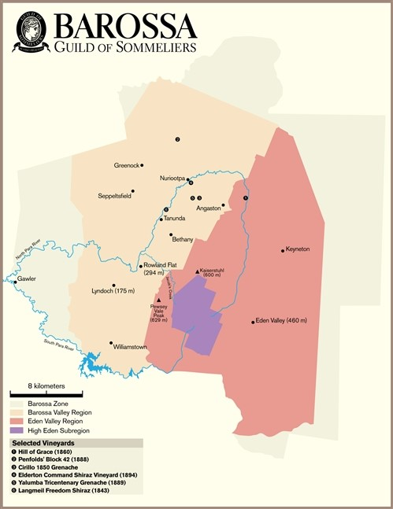
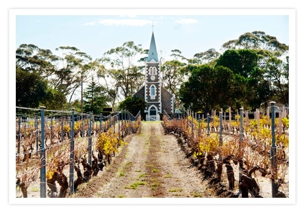
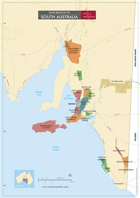
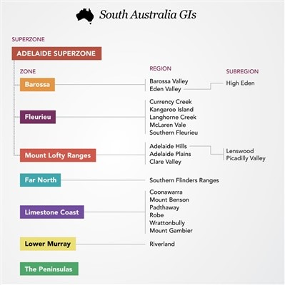

History. Used to stand in Victoria’s shadows, but then phylloxera helped it along (late 1800’s). Victoria’s wine industry was decimated, but South Australia’s was just fine…
Today, it is still Phylloxera free.
About 50% of the national total comes from this state. Most of the largest wine groups (e.g. accolade wines and premium wine brands (pernod ricard(oh god, triple parentheses????))) operate here.
History: 1847 Bavarian immigrant Johann Gramp planted a vineyard along the banks of Jacob’s creek in Rowland Flat. Established Orlando wines. 1st commercial winery to operate out of the region. Barossa has over 100 ha of vines that are AT LEAST a century old (no phylloxera makes that more possible).
a self-regulated classification of vineyard age: Four designations:
Note: Barossa Zone divided into two valleys: Barossa Valley GI and Eden Valley GI.
Warm, continental. Region III. Hot, flat valley. Deep, loamy clay and lots of water for irrigation. Seppeltsfield 100 year old para liqueur here (past of fortified wine production, what the Australians used to refer to as Stickies) Shiraz is now the star.
Classic Shiraz from this region: chocolate, prune, date, wrapped in velvety tannins and emboldened by high, mentholated alcohol. Yummie!
They also make sparkling shiraz. Strange. Used to call it sparkling burgundy. Usually fermented to dryness, then add back tawny wine for sweetness. Most are semi sweet.
Usually gets a shrug at best from american sommeliers. Fairs well at the breakfast table, particularly with back and egg rolls. Aussie “brekkie” favorite. Rockford and Peter Rumball make good examples.
Not all Shiraz. Cabernet can do well (2nd most planted in GI). Grenache/Syrah/Mourvedre blends too (GSM)
Whites struggle (e.g. chardonnay). BUT: Semillon can do great. Picked early with SEARING acidity.
Peter Lehmann’s Margaret from 1929 Semillon vineyard, is a top example.
In 1847, at the same time Jacob’s creek story was starting, an Englishman named Joseph Gilbert planted Pewsey Vale. Area called Barossa Ranges, east of Barossa Valley, a windswept place. In Eden Valley! Eden is cooler and higher (compared to Barossa)
Valley’s most famous area: Henschke’s 8 ha Hill of Grace, planted in 1860, is the top single vineyard wine.
Note: label a wine “Barossa” it’s the zone, “Barossa Valley” it’s the GI. (Whenever you find out distinctions like this, ALWAYS note them. Guests ask questions like this all the time. The more you know, the more you can let people know.)
Reds barely outnumber whites in Eden Valley, and Riesling is approximately 25% of plantings. Riesling from Eden Valley: classically dry, sharply acidic and dripping with lime flavor. (Note: and so so so so good).
Above is Gnadenberg Church, Hill of Grace, in Eden Valley.
Within Fleurie Zone: McLaren Vale GI. Surrounded by Mt Lofty Ranges (to the south) and Gulf of St. Vincent to the west.
One of the signature shiraz growing region. (also, most important within Fleurie) 1st planted in 1838. Phylloxera free.
Climate: windy, warm (little fungal pressure) Organic and biodynamic principles abound. ¼ or so of the 7 dozen wineries are certified organic. 40 ish are into something called “Generational Farming” a new sustainable initiative. Drought is the main concern here.
Mclaren Vale is mainly a red wine area. Shiraz is planted in over half of the region (7,100 hA), so that is the top variety, followed by Cabernet Sauvignon, then Grenache. Tasting notes for Shiraz in McLaren Vale: Usually intense. Brooding tannins, high alcohol levels (14-15%) and deep blue fruits. Some producers are dialing it back. Less intense chocolate and prune notes (as compared to Barossa) and some tasters note an iron taste (there is some ironstone, or red sandstone, in the area) Climate: growing season gets longer as you move inland and upward in altitude.
Initiative here in McLaren Vale: “Scarce Earth” group. Focus on individual sites. They published a map in 2010 of the different regions in McLaren Vale. “Geology of the McLaren Vale Wine Regions” Also allows members of the “McLaren Vale Sustainable Winegrowing Australia” (MVSWGA) to submit wines from single sites to annual tasting for approval as “scarce earth” wines. In 2011 two dozen wines from key producers (d’Arenberg, Chapel Hill and Gemtree) were selected and released all together on 1st of may the year following harvest.
Again, Shiraz and Cabernet Sauvignon are the most planted red grapes. Grenache represents some of the most exciting though. Performs really well in sandy areas (blewitt springs and kangarilla e.g.) Only real white of note: Chardonnay, and that’s more market demand than suitability.
Home of Clare Valley GI!!!
Clare Valley, there is everything from steely riesling to shiraz here. On paper, it seems hotter than it is. Elevation cools the vines. There is a sizeable Diurnal shift here too. Climate can pose some dangers: spring frost can be an issue (especially in the east and south, they can be cooler. E.g. Polish Hill River, Watervale and Auburn.) On the other hand, pests and other disease pressures are lessened here because it is a dry climate.
In Clare Valley: Shiraz is the most planted. Typically Shiraz from the Clare Valley is rich and round in style, with slightly less weight and alcohol than one would encounter in Barossa Valley. There is also Cabernet Sauvignon (sometimes blended with Shiraz) but more often here Malbec.
NOTE: Jim Barry’s “Armagh” vineyard is one of the top internationally.
Riesling is the real star in Clare Valley though (according to sommeliers) Extremely dry, nearly excruciating acidity. Lime, flowers, and taut stone fruit flavors. 12.5-13% abv. Best examples tend to emerge from areas of Watervale and Polish Hill. (Note: Polish Hill has blue slate bedrock, very similar to Devonian blue slate of Mosel Valley)
(Directly south of Barossa) You’d think, being between McLaren Vale and Barossa it’d be mostly red, but it’s actually kinda cold, and mostly white (70%). Chardonnay is dominant in the central sub-region of Piccadily valley GI. There is also Lenswood GI (another sub region) that is mostly SB. Tastes kind of like a restrained New Zealand Sauvignon Blanc. Then you have what they call ‘the hills’ The region's winemakers craft slightly riper styles of Pinot noir than their counterparts in yarra valley. Softer, lighter (but not lean) chards. Also, obviously, sparkling.
Most notable producers in Adelaide hills: Petaluma and Shaw + Smith, The Lane, Golding, Bird in Hand and BK wines. (BK is becoming a sommelier favorite)
night and day different from Adelaide hills. Super hot and dry. Mostly not regarded highly for quality wine. -BUT- Penfold's historic Magil Estate, where Max Schubert first experimented with ‘grange’ is right outside these borders. Adelaide’s suburbs surround it, and there’s just a little five hA remaining showpiece for the company
Cabernet Sauvignon Land!
This is the terra rosa (famous) area. “Red soil” Predominantly Red Grapes: In coonawarra, Cabernet is just over 50%, but if you add in merlot and shiraz, it’s altogether about 85%.
Most accounts say coonawarra means honeysuckle in Aboriginal. (There are other, less flattering speculations about the name though…) Samuel and David Wynn that really started coonawarra off. 1951.
Typical Coonawarra Cab: distinctive red berry fruits, with cassis sweet herb and dried mint secondary tones.
Nearby, Padthaway GI is smaller than Coonawarra (about 1,200 hA). Disappears into multi-region blends often. Cabernet Sauvignon, Shiraz and Chardonnay. And random other grapes.
Newer, similar terra rosa goes through here.
Mount Gambier GI, Mount Benson and Robe GI are all kind of residual regions. Mount Gambier GI is around the city and town of the same name (it is actually the second biggest city in South Australia) only 300 hA are planted. Pinot Noir and Sauvignon Blanc most planted here (cooler maritime).
Mount Benson and Robe are more shiraz heavy, with Cabernet and Sauvignon Blanc finishing it off.
Over 25% of the NATIONAL grape tonnage. Bam!
Follows the course of the Murray River from South Australia border west towards Blanchetown, near eden valley. River is wide and fertile, sandy soils: farming dream. Irrigation water from rivers is important. Big producers have spots here.
Chardonnay and Shiraz are neck to neck here.
 